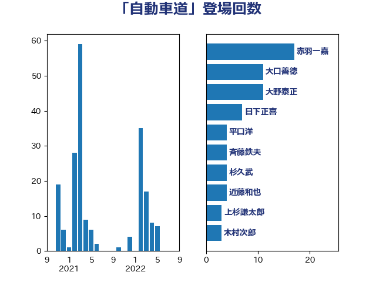

単語「自動車道」

| 赤羽一嘉 | 公明党 | 17 回 |
| 大口善徳 | 公明党 | 11 回 |
| 大野泰正 | 自由民主党 | 11 回 |
| 日下正喜 | 公明党 | 7 回 |
| 平口洋 | 自由民主党 | 4 回 |
| 斉藤鉄夫 | 公明党 | 4 回 |
| 杉久武 | 公明党 | 4 回 |
| 近藤和也 | 立憲民主党 | 4 回 |
| 上杉謙太郎 | 自由民主党 | 3 回 |
| 木村次郎 | 自由民主党 | 3 回 |
| 細田博之 | 自由民主党 | 3 回 |
| 足立敏之 | 自由民主党 | 3 回 |
| 中野英幸 | 自由民主党 | 2 回 |
| 室井邦彦 | 日本維新の会 | 2 回 |
| 石原正敬 | 自由民主党 | 2 回 |
| 鎌田さゆり | 立憲民主党 | 2 回 |
| 高橋千鶴子 | 日本共産党 | 2 回 |
| あかま二郎 | 自由民主党 | 1 回 |
| 中島克仁 | 立憲民主党 | 1 回 |
| 伊波洋一 | 無所属 | 1 回 |
| 古川元久 | 国民民主党 | 1 回 |
| 坂本哲志 | 自由民主党 | 1 回 |
| 城井崇 | 立憲民主党 | 1 回 |
| 大西健介 | 立憲民主党 | 1 回 |
| 小里泰弘 | 自由民主党 | 1 回 |
| 尾崎正直 | 自由民主党 | 1 回 |
| 山口俊一 | 自由民主党 | 1 回 |
| 岩田和親 | 自由民主党 | 1 回 |
| 岸田文雄 | 自由民主党 | 1 回 |
| 末松信介 | 自由民主党 | 1 回 |
| 浜口誠 | 国民民主党 | 1 回 |
| 滝波宏文 | 自由民主党 | 1 回 |
| 熊谷裕人 | 立憲民主党 | 1 回 |
| 田名部匡代 | 立憲民主党 | 1 回 |
| 田村智子 | 日本共産党 | 1 回 |
| 石井苗子 | 日本維新の会 | 1 回 |
| 福島伸享 | 無所属 | 1 回 |
| 紙智子 | 日本共産党 | 1 回 |
| 緑川貴士 | 立憲民主党 | 1 回 |
| 若松謙維 | 公明党 | 1 回 |
| 菅義偉 | 自由民主党 | 1 回 |
| 西銘恒三郎 | 自由民主党 | 1 回 |
| 逢坂誠二 | 立憲民主党 | 1 回 |
| 野間健 | 立憲民主党 | 1 回 |
| 金城泰邦 | 公明党 | 1 回 |
| 鈴木貴子 | 自由民主党 | 1 回 |
| 青山大人 | 立憲民主党 | 1 回 |
| 青木愛 | 立憲民主党 | 1 回 |
| 高木毅 | 自由民主党 | 1 回 |